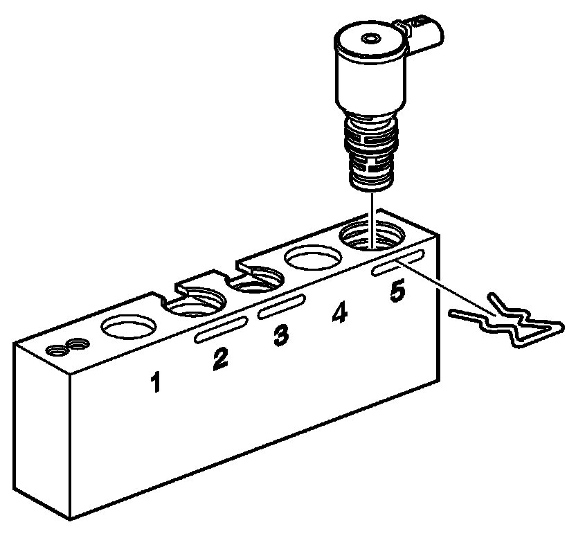
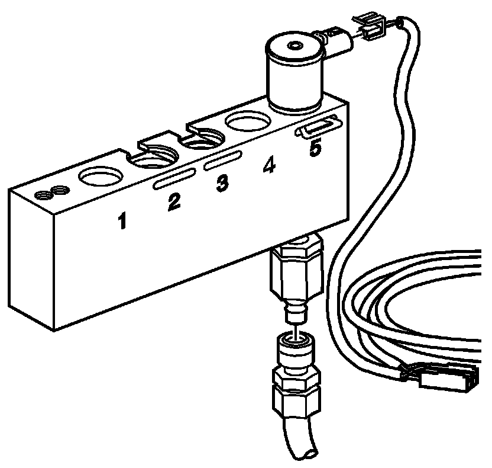

Shift Solenoid Leak Test
Shift Solenoid Leak Test
Tools Required
* J 44246 Solenoid Testing Kit
* J 35616 GM Terminal Test Kit
Leak Test Procedure
Important:
* This procedure tests On/Off type solenoid valves.
* Visually inspect the physical condition of the solenoid before testing. Inspect the O-rings before and after the test to be sure that they are not cut or damaged.
1. Remove the shift solenoid valve from the control valve body or the TCC solenoid valve from the transmission case. Refer to 1-2 Shift Solenoid Valve Replacement (1-2 Shift Solenoid Valve Replacement) ,2-3 Shift Solenoid Valve Replacement (2-3 Shift Solenoid Valve Replacement) , 4-5 Shift Solenoid Valve Replacement (4-5 Shift Solenoid Valve Replacement) or Torque Converter Clutch Solenoid Replacement (Service and Repair) , Transmission Internal Electrical Harness Replacement (Service and Repair) .

2. Install the TCC solenoid valve, the 1-2 shift solenoid valve, the 2-3 shift solenoid valve or the 4-5 shift solenoid into bore number 5 of the J 44246 .
Install the factory retainer clip to retain the solenoid.

3. Connect the solenoid testing harness supplied with the J 44246 to the solenoid.
Important: Do not use air pressure in excess of 120 psi. Excessive pressure will not allow the solenoid ball check valve to seat properly. Recommended air pressure is 50 psi.
4. Apply compressed air to the J 44246 .
5. Connect the solenoid testing harness to the, 12 volt, positive and negative (-) battery terminals.
6. Observe if the solenoid is operating electrically. An audible clicking noise can be heard when connecting or disconnecting power.
Important:
* All solenoids need to be energized to seal.
* A small amount of air leakage is normal +/- 21 kPa (+/- 3 psi).
7. Observe the air flow through the solenoid. The flow will completely or nearly completely stop. Replace the solenoid if there continues to be an obvious air leak when the solenoid is energized.
Important: Inspect the O-rings after the test to be sure that they are not cut or damaged.
8. Install the shift solenoid valve into the control valve body or the TCC solenoid valve into the transmission case. Refer to 1-2 Shift Solenoid Valve Replacement (1-2 Shift Solenoid Valve Replacement) ,2-3 Shift Solenoid Valve Replacement (2-3 Shift Solenoid Valve Replacement) , 4-5 Shift Solenoid Valve Replacement (4-5 Shift Solenoid Valve Replacement) or Torque Converter Clutch Solenoid Replacement (Service and Repair) , Transmission Internal Electrical Harness Replacement (Service and Repair) .